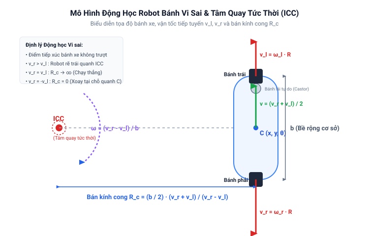
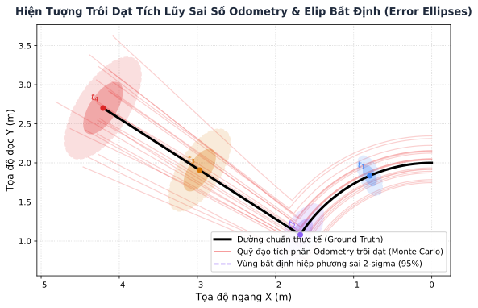

5.1 Hình học Robot Vi sai (Differential Drive)
Robot dẫn động vi sai (Differential Drive Robot) là kiến trúc phổ biến nhất trong robot học di động. Robot gồm hai bánh xe dẫn động độc lập gắn trên một trục chung với khoảng cách cơ sở $b$ (track width), và một hoặc hai bánh xe đỡ tự do (caster wheels). Mỗi bánh xe có bán kính $r$, quay với vận tốc góc tương ứng $\omega_r$ và $\omega_l$, tạo ra các vận tốc dài tiếp tuyến $v_r = r \cdot \omega_r$ và $v_l = r \cdot \omega_l$.
5.2 Tâm quay Tức thời (Instantaneous Center of Curvature - ICC)
Do giả thiết bánh xe lăn thuần túy không trượt theo phương ngang (Non-holonomic constraint), quỹ đạo chuyển động tức thời của robot là một cung tròn quay quanh Tâm quay tức thời ICC:

5.3 Động học Thuận (Forward Kinematics) & Tích phân Quỹ đạo
Từ trạng thái $[x_t, y_t, \theta_t]^T$, sau khoảng thời gian ngắn $\Delta t$ với vận tốc góc $\omega \ne 0$, trạng thái mới được tính toán chính xác bằng phép quay quanh ICC:
$$\begin{bmatrix} x_{t+\Delta t} \\ y_{t+\Delta t} \\ \theta_{t+\Delta t} \end{bmatrix} = \begin{bmatrix} \cos(\omega \Delta t) & -\sin(\omega \Delta t) & 0 \\ \sin(\omega \Delta t) & \cos(\omega \Delta t) & 0 \\ 0 & 0 & 1 \end{bmatrix} \begin{bmatrix} x_t - \text{ICC}_x \\ y_t - \text{ICC}_y \\ 0 \end{bmatrix} + \begin{bmatrix} \text{ICC}_x \\ \text{ICC}_y \\ \omega \Delta t \end{bmatrix}$$
5.4 Động học Ngược (Inverse Kinematics)
Khi thuật toán quy hoạch quỹ đạo yêu cầu robot di chuyển với vận tốc dài mong muốn $v$ và vận tốc góc bẻ lái $\omega$, bộ điều khiển động học ngược biến đổi ngược thành lệnh vận tốc góc của từng bánh xe:
$$\omega_r = \frac{2v + \omega \cdot b}{2r}, \quad \omega_l = \frac{2v - \omega \cdot b}{2r}$$
5.5 Tích lũy Odometry (Dead Reckoning) từ Xung Encoder
Trong thực tế, vi điều khiển đọc số xung đếm $\Delta N_r, \Delta N_l$ từ encoder trong chu kỳ $\Delta t$. Quãng đường lăn của từng bánh xe là $\Delta s_r = 2\pi r \frac{\Delta N_r}{TPR}$ và $\Delta s_l = 2\pi r \frac{\Delta N_l}{TPR}$. Quãng đường trung bình và độ lệch hướng:
$$\Delta s = \frac{\Delta s_r + \Delta s_l}{2}, \quad \Delta \theta = \frac{\Delta s_r - \Delta s_l}{b}$$
Cập nhật vị trí bằng phép xấp xỉ bậc hai Runge-Kutta 2 (góc hướng trung bình):
$$x_{t+1} = x_t + \Delta s \cos\left(\theta_t + \frac{\Delta \theta}{2}\right), \quad y_{t+1} = y_t + \Delta s \sin\left(\theta_t + \frac{\Delta \theta}{2}\right), \quad \theta_{t+1} = \theta_t + \Delta \theta$$
5.6 Phân tích Sai số Trôi (Odometry Drift): Hệ thống vs Ngẫu nhiên

🔢 TÍNH TOÁN CẬP NHẬT TỌA ĐỘ ODOMETRY TỪ TÍN HIỆU ENCODER
Bài toán: Robot vi sai có khoảng cách 2 bánh xe $b = 0.20\text{ m}$, bán kính bánh xe $r = 0.04\text{ m}$. Encoder có độ phân giải $TPR = 1000\text{ xung/vòng}$. Robot đang ở tọa độ $(x_0, y_0, \theta_0) = (1.50\text{ m}, 2.00\text{ m}, 0.0\text{ rad})$. Trong khoảng thời gian $\Delta t = 0.1\text{ s}$, vi điều khiển đọc được $\Delta N_r = 50\text{ xung}$ và $\Delta N_l = 30\text{ xung}$. Hãy tính vị trí và góc hướng mới của robot.
$\Delta s_r = 2\pi (0.04) \times \frac{50}{1000} = 0.2513 \times 0.05 = 0.01257\text{ m}$
$\Delta s_l = 2\pi (0.04) \times \frac{30}{1000} = 0.2513 \times 0.03 = 0.00754\text{ m}$
$\Delta s = \frac{0.01257 + 0.00754}{2} = 0.01005\text{ m} = 10.05\text{ mm}$
$\Delta \theta = \frac{0.01257 - 0.00754}{0.20} = \frac{0.00503}{0.20} = 0.02515\text{ rad} \approx 1.44^\circ$
Góc định hướng trung bình: $\theta_{mid} = 0.0 + \frac{0.02515}{2} = 0.01258\text{ rad}$
$x_1 = 1.50 + 0.01005 \times \cos(0.01258) = 1.50 + 0.01005 \times 0.9999 = 1.5100\text{ m}$
$y_1 = 2.00 + 0.01005 \times \sin(0.01258) = 2.00 + 0.01005 \times 0.01258 = 2.0001\text{ m}$
$\theta_1 = \theta_0 + \Delta \theta = 0.0 + 0.02515 = 0.02515\text{ rad}$
Vận tốc tức thời: $v = \frac{\Delta s}{\Delta t} = 0.1005\text{ m/s}$, $\omega = \frac{\Delta \theta}{\Delta t} = 0.2515\text{ rad/s}$.
📌 KẾT LUẬN & ĐÁNH GIÁ KỸ THUẬT
Phương pháp tích phân Runge-Kutta bậc 2 từ dữ liệu encoder bánh xe mang lại ước lượng vị trí chính xác hơn hẳn phép xấp xỉ Euler bậc 1, giảm thiểu sai số tích lũy của mô hình động học vi sai trong chu kỳ ngắn.
🛠️ CẦU NỐI KIẾN TRÚC ROS 2
Động học vi sai được chuẩn hóa bằng package diff_drive_controller trong ros2_control. Node này nhận lệnh vận tốc từ topic /cmd_vel (kiểu geometry_msgs/msg/Twist), tính động học ngược điều khiển bánh xe, đồng thời xuất bản dữ liệu odometry lên /odom (kiểu nav_msgs/msg/Odometry) và phát sóng khung biến đổi TF2 odom -> base_link.